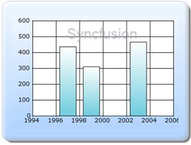

The steps to customize the Watermark text through Builder are as follows:
Step 1:
View:
The Watermark text can be set by using the WaterMarkText property. The Watermark text can be positioned by using the WaterMarkVerticalAlignment and WaterMarkVerticalAlignment properties. The opacity of the text can be set by using the WaterMarkOpacity property. The WaterMarkZOrder is used to set the display of the text, if the text can be displayed behind or over the ChartArea. The text appearance can be customized by using the WaterMarkFont and WaterMarkTextColor properties.
Add the code displayed below in the aspx file.
View[ASPX]
<%--Rendering the Chart COntrol--%>
<%=Html.Chart("chart_Model")
.ChartArea(area => area.Depth(50)
//Setting the watermark text
.WaterMarkText("Syncfusion")
.WaterMarkZOrder(Syncfusion.Windows.Forms.Chart.ChartWaterMarkOrder.Over)
//setting the vertical alignment of the text
.WaterMarkVerticalAlignment(Syncfusion.Windows.Forms.Chart.ChartAlignment.Near)
//setting the horizontal alignment of the text
.WaterMarkHorizontalAlignment(Syncfusion.Windows.Forms.Chart.ChartAlignment.Center)
//setting the opacity
.WaterMarkOpacity(60f)
//Setting the Zorder to display the text over the chart area.
.WaterMarkZOrder(Syncfusion.Windows.Forms.Chart.ChartWaterMarkOrder.Over)
//setting the font style
.WaterMarkFont(new System.Drawing.Font("Arial", 18))
//setting the text color
.WaterMarkTextColor(System.Drawing.Color.FromArgb(171, 153, 177)))
.Series(series=>{
series.Add().Points(points =>
{
points.Add().X(1997).YValues(new double[] { 437 });
points.Add().X(1999).YValues(new double[] { 311 });
points.Add().X(2003).YValues(new double[] { 466 });
})
.Type(Syncfusion.Windows.Forms.Chart.ChartSeriesType.Column);
})
.Skins(ChartModelSkins.Office2007Blue)
.ChartSeriesSkins(ChartSeriesSkins.DefaultAlpha)
.BorderAppearance(border => border.SkinStyle(Syncfusion.Windows.Forms.Chart.ChartBorderSkinStyle.Emboss))
%>
View[cshtml]
@*--Rendering the Chart COntrol--*@
<%=Html.Chart("chart_Model")
.ChartArea(area => area.Depth(50)
//Setting the watermark text
.WaterMarkText("Syncfusion")
.WaterMarkZOrder(Syncfusion.Windows.Forms.Chart.ChartWaterMarkOrder.Over)
//setting the vertical alignment of the text
.WaterMarkVerticalAlignment(Syncfusion.Windows.Forms.Chart.ChartAlignment.Near)
//setting the horizontal alignment of the text
.WaterMarkHorizontalAlignment(Syncfusion.Windows.Forms.Chart.ChartAlignment.Center)
//setting the opacity
.WaterMarkOpacity(60f)
//Setting the Zorder to display the text over the chart area.
.WaterMarkZOrder(Syncfusion.Windows.Forms.Chart.ChartWaterMarkOrder.Over)
//setting the font style
.WaterMarkFont(new System.Drawing.Font("Arial", 18))
//setting the text color
.WaterMarkTextColor(System.Drawing.Color.FromArgb(171, 153, 177)))
.Series(series=>{
series.Add().Points(points =>
{
points.Add().X(1997).YValues(new double[] { 437 });
points.Add().X(1999).YValues(new double[] { 311 });
points.Add().X(2003).YValues(new double[] { 466 });
})
.Type(Syncfusion.Windows.Forms.Chart.ChartSeriesType.Column);
})
.Skins(ChartModelSkins.Office2007Blue)
.ChartSeriesSkins(ChartSeriesSkins.DefaultAlpha)
.BorderAppearance(border => border.SkinStyle(Syncfusion.Windows.Forms.Chart.ChartBorderSkinStyle.Emboss))
%>
Step 2:
Controller:
Add the code displayed below in the Controller file.
public ActionResult Index()
{
return View();
}
Step 3:
Run the code, to get the following output:

Figure 312: Chart - Watermark support